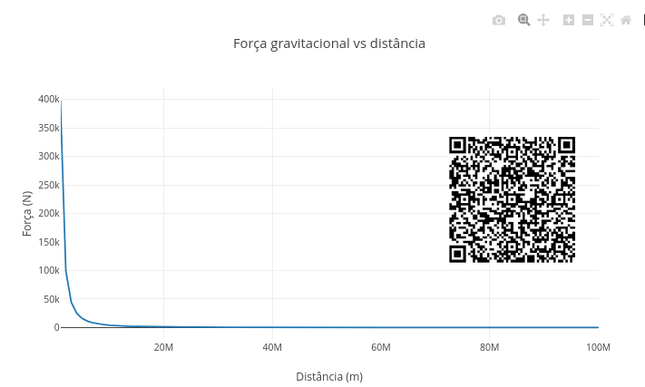
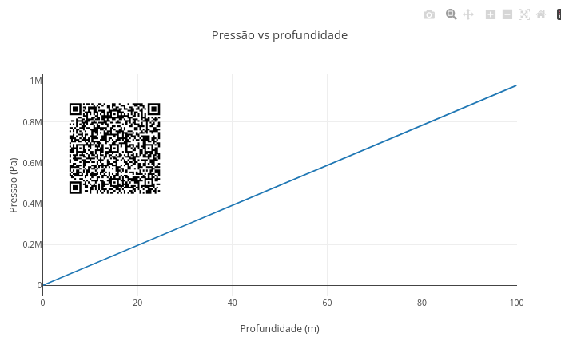
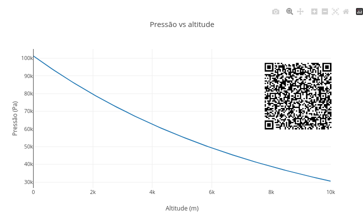
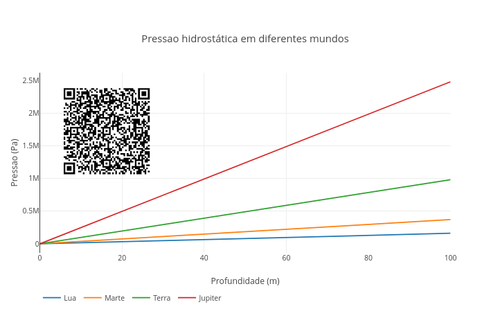
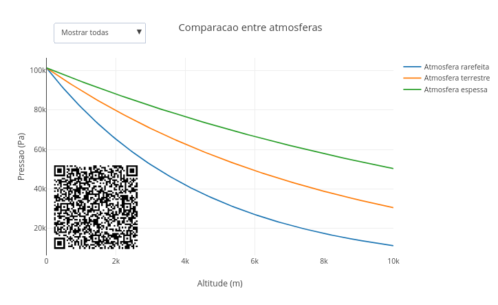

5 Gravitação e Fluidos
Por que um astronauta parece flutuar no espaço, mesmo sob ação da gravidade ? Por que a pressão no fundo do oceano é gigantesca, a ponto de esmagar estruturas metálicas rígidas ? Por que planetas como Júpiter têm atmosferas tão extensas, e outros não ? Por que nosso ouvido parece fechar quando descemos uma serra próxima ao mar ?
A resposta que unifica essas e mais um sem-número de outras relações já está ao final da primeira pergunta aí de cima: a gravidade, que puxa objetos e organiza fluidos. A gravitação descreve como massas se atraem, e também como se comportam o ar da atmosfera, a água dos oceanos e o interior dos planetas. Esse capítulo busca explorar um pouco como a gravidade atua sobre objetos isolados e também em sistemas contínuos, tais como líquidos e gases, revelando padrões que se repetem desde o fundo dos oceanos até as atmosferas planetárias.
Ao final, você será capaz de:
- compreender a gravidade como uma interação capaz de organizar movimentos e estruturas no Universo;
- relacionar gravidade e pressão em líquidos e gases;
- interpretar a pressão hidrostática como resultado do peso de um fluido;
- compreender como atmosferas se formam e variam em diferentes mundos;
- investigar como densidade e gravidade influenciam flutuação e empuxo;
- comparar fenômenos físicos em diferentes ambientes planetários;
- explorar visualizações interativas por códigos de programação.
Antes dos conceitos de praxe, um JSPlotly inicial para o capítulo, como já é de praxe !

Esse app mostra como a força gravitacional entre dois corpos diminui quando a distância entre eles aumenta. A ideia central é simples: as massas se atraem, mas essa atração se enfraquece rapidamente com a distância.
A equação usada é:
\[ F = G \frac{m_1 m_2}{r^2} \tag{5.1}\]
Essa é a chamada Lei da Gravitação Universal. Nela, m1 e m2 são as massas dos corpos, r é a distância entre eles e G é a constante gravitacional.
Agite antes de usar
Após carregar o aplicativo, observe o gráfico da força gravitacional em função da distância. O trecho do código que determina essa força é:
F.push(G * m1 * m2 / (dist * dist));Ele calcula a força para várias distâncias, gerando a curva mostrada no gráfico. Os parâmetros para você mexer estão aqui:
let m1 = 5.97e24; // massa da Terra
let m2 = 1000; // massa do objeto
let escalaDist = 1e6;Alguns cenários se mostram interessantes para você explorar o aplicativo. Como em outros scripts, você pode apagar um cenário com clean antes de rodar outro, ou não, sobrepondo assim curvas para comparação entre cenários.
- Objeto próximo da Terra.
let m1 = 5.97e24;
let m2 = 1000;
let escalaDist = 1e6;Observe que a força é maior nas menores distâncias e cai rapidamente à medida que r aumenta. Isso ocorre porque a gravidade não desaparece de repente, mas diminui continuamente com a distância.
Objeto mais massivo. Aumente em 10 vezes a massa do objeto. Veja que a força aumenta em relação ao cenário anterior. Isso acontece por que, se você dobrar ou multiplicar a massa, a força gravitacional aumenta na mesma proporção.
Planeta menos massivo Que tal simular a força de atração em Marte ?!
let m1 = 6.4e23; // massa aproximada de Marte, em kg
let m2 = 1000;Perceba que a força fica menor do que na Terra. Ou seja, mundos com menor massa exercem menor atração gravitacional sobre o mesmo objeto.
- Distâncias maiores. Agora altere a distância entre os objetos:
let escalaDist = 5e6;Veja que a curva fica mais baixa, porque as distâncias consideradas são maiores. Ou seja, a distância tem efeito muito forte, pois aparece ao quadrado no denominador (Equação 5.1).
Esse cenários mostram que a gravidade depende de duas coisas: massa e distância. Massas maiores aumentam a atração, e distâncias maiores reduzem a atração — e reduzem muito, porque a relação é inversamente proporcional ao quadrado da distância. Em outras palavras, aumentar a massa fortalece a gravidade, mas aumentar a distância a enfraquece. E a distância pesa muito nessa conta.
Até aqui, percebe-se que a gravidade depende da massas de um corpo, o que reflete em seu peso, ou força peso:
\[ P = m * g \tag{5.2}\]
Ocorre que, se o peso for de um fluido, como a água, essa força acaba por gerar pressão. E a pressão explica fenômenos como atmosfera, hidrostática, empuxo e peso aparente. Temos então a gravitação sendo tratada também dentro da água, do ar e dos corpos que flutuam, e não restrita somente ao espaço.
Isso é assunto pro próximo app de JSPlotly, pressão em fluidos.
Pressão em fluidos

O script da Figura 5.3 mostra como a pressão aumenta à medida que mergulhamos mais profundamente em um fluido. A ideia é que cada camada de líquido exerce peso sobre as camadas debaixo.
A equação utilizada é:
\[ P = \rho g h \tag{5.3}\]
Onde \(\rho\) é a densidade do fluido, \(g\) é a gravidade, e \(h\) é a profundidade.
Agite antes de usar:
Você pode editar principalmente esses valores no código:
let rho = 1000;
let g = 9.8;
let hmax = 100;Depois clique em add e observe como a pressão varia com a profundidade. O cálculo principal aparece neste trecho:
P.push(rho * g * depth);O script então calcula a pressão em diferentes profundidades e gera a curva correspondente. “Facinho”, não ? Alguns cenários pra você explorar.
- Água na Terra.
let rho = 1000;
let g = 9.8;Observe que a pressão cresce linearmente com a profundidade, ou seja: quanto mais fundo, maior o peso da coluna de líquido acima.
Fluido mais denso. Aumente para “rho = 13600”, um valor próximo ao do mercúrio. Veja que a curva cresce muito mais rapidamente. Isso ocorre porque líquidos mais densos exercem maior pressão para uma mesma profundidade.
Gravidade menor. Agora altere a gravidade para um valor próximo ao da Lua.
let g = 1.6;Observe que pressão aumenta mais lentamente, porque a pressão hidrostática depende diretamente da gravidade e, nesse caso, do mundo considerado.
- Grandes profundidades. Coloque a altura em:
let hmax = 500;O gráfico agora se estende para profundidades maiores, porque mesmo mantendo o mesmo líquido as pressões são enormes.
No script, a profundidade é gerada com espaçamentos iguais:
let depth = i * (hmax / 100);Ele então calcula a pressão correspondente para cada ponto, o que resulta num gráfico praticamente linear, porque:
\[ P \propto h \]
Ou seja, dobrar a profundidade dobra a pressão. Além disso, quanto maior a densidade do líquido, ou maior a gravidade, maior será também a pressão exercida. A gravidade estudada no script não atua apenas em planetas e órbitas, mas também nos líquidos, comprimindo as camadas inferiores, e também na atmosfera como um todo.
Desse modo, algumas coisas passam a fazer mais sentido, embora não sejam nada conectadas. Por exemplo, mergulhadores sofrem maior pressão quanto mais fundo descem, planetas com maior gravidade comprimem suas atmosferas, e estrelas são mantidas estáveis por equilíbrio entre gravidade e pressão. Resumindo o “babado”, todos os fluidos pesam, gerando uma pressão que aumenta com a profundidade. Inclusive o ar, pelas camadas da atmosfera.
Que tal compreender um pouco mais sobre a influência da gravidade nessa última, a atmosfera ? Para isso, veja se o app da Figura 5.4 sobre pressão atmosférica pode te ajudar.
O ar também possui massa. A atmosfera terrestre forma uma enorme coluna de gás ao redor do planeta, comprimida pela gravidade. Desse jeito, quanto maior a altitude menor a quantidade de ar acima de nós, e menor a pressão atmosférica. Isso pode ser evidenciado com o script da Figura 5.4. O código mostra como a pressão atmosférica diminui com a altitude. Diferentemente da pressão hidrostática simples, que cresce linearmente, a atmosfera apresenta uma queda aproximadamente exponencial.

A equação utilizada no código é:
\[ P = P_0 e^{-kh} \tag{5.4}\]
Nessa equação:
- \(P_0\) é a pressão ao nível do solo;
- \(h\) é a altitude;
- \(k\) controla a rapidez da queda da pressão.
Agite antes de usar
Você pode editar o trecho abaixo, clicar em add, e observar como a pressão varia com a altitude.
const P0 = 101325;
const k = 0.00012;O cálculo principal para isso aparece neste trecho:
P.push(P0 * Math.exp(-k * alt));Essa função exponencial (Math.exp) faz com que a pressão diminua rapidamente nas primeiras altitudes, e mais lentamente em grandes alturas. Isso permite “bolar” alguns cenários interessantes, veja:
- Atmosfera terrestre padrão.
const P0 = 101325;
const k = 0.00012;O gráfico resultante mostra que a pressão cai gradualmente com a altitude, porque há menos ar acima de nós exercendo peso.
- Atmosfera mais densa. Agora a pressão dobra ! E é isso o que ocorre com outros planetas, onde atmosferas mais densas podem apresentar pressões muito maiores ao nível do solo.
const P0 = 202650;- Queda mais rápida da pressão.
const k = 0.00025;Veja que a curva despenca mais rapidamente. Isso se dá porque valores maiores de \(k\) representam atmosferas que perdem pressão mais rapidamente com a altitude.
- Atmosfera mais extensa. Aqui você deve perceber que a pressão diminui mais lentamente, já que atmosferas mais extensas conseguem manter pressão significativa mesmo em grandes altitudes.
const k = 0.00005;O script calcula a pressão em diferentes altitudes e depois aplica o modelo exponencial para estimar a pressão atmosférica correspondente. A diferença em relação ao que vimos no script da Figura 5.3 é simples: na água, a densidade varia pouco, mas na atmosfera, o próprio ar vai ficando menos denso com a altitude. E é por isso que o perfil vai ficando curvilinear.
Experimente “brincar” um pouco mais com esse app verificando diferenças por sobreposição dos gráficos com o botão add. Compare, por exemplo, atmosferas densas com rarefeitas, quedas rápidas com quedas lentas, bem como diferentes condições planetárias.
Em síntese, o ar também pesa, comprimido pela gravidade, embora subir signifique atravessar camadas da atmosfera cada vez menos densas. Juntando o que você já experimentou nas seções anteriores do capítulo, perceba agora que a gravidade aparece em três escalas diferentes: entre corpos celestes, em líquidos e na atmosfera.
Imagine poder juntar tudo isso, ou melhor, corpos celestes e líquidos ! De repente, um mesmo oceano se comportando de formas muito diferentes dependendo do mundo em que se está. Em planetas ou luas com gravidade maior, a pressão aumenta mais rapidamente com a profundidade. Em mundos com gravidade menor, esse aumento acontece de forma mais suave. E adivinha ?! Que tal exercitar isso num próximo script de JSPlotly ?
Essa seção tem sido dedicada a levantar hipóteses, realistas ou não, e em contextos variados. Mas antes que nos defrontemos com as divagações de costume, vamos explorar um pouco a ideia mencionada acima, a de que gravidade de diferentes mundos altera a pressão hidrostática, junto ao app da Figura 5.5.

Esse script compara como a pressão hidrostática varia em diferentes corpos celestes. Embora o fluido possa ser o mesmo, a gravidade de cada mundo altera significativamente a pressão exercida em grandes profundidades. A equação utilizada continua sendo:
\[ P = \rho g h \]
Mas agora o valor de g muda para cada mundo. Assim, edite o início do código:
const rho = 1000;
const hmax = 100;O script compara automaticamente a pressão prevista na Lua, em Marte, na Terra, e em Júpiter. E cada curva mostra como a pressão cresce com a profundidade naquele mundo. As gravidades usadas aparecem neste trecho:
const mundos = {
"Lua": 1.62,
"Marte": 3.71,
"Terra": 9.81,
"Júpiter": 24.79
};Veja que todas as curvas aumentam linearmente, mas com inclinações diferentes. A curva de Júpiter cresce muito mais rapidamente do que a da Terra, enquanto a da Lua cresce lentamente. Isso acontece porque:
\[ P \propto g \]
Ou seja, a gravidade controla o quanto o fluido “pesa”. Vamos experimentar alguns cenários ?
- Água em diferentes mundos.
const rho = 1000;A comparação padrão utiliza um fluido semelhante à água. Perceba que mesmo usando o mesmo líquido, a pressão muda drasticamente entre os mundos.
Fluido mais denso. Altere a densidade acima para um valor próximo à do mercúrio (“const rho = 13600”). Agora todas as curvas ficam mais inclinadas, porque a densidade e gravidade atuam juntas no aumento da pressão.
Grandes profundidades. Agora mude:
const hmax = 500;Veja que as diferenças entre os mundos ficam ainda mais evidentes. De fato, em grandes profundidades, pequenas diferenças de gravidade geram enormes diferenças de pressão (acho que o Tio Ben, da saga Homem-Aranha, disse algo parecido uma vez).
Comparando Lua e Júpiter. Note que, na Lua, o crescimento é lento, enquanto que em Júpiter o crescimento é muito rápido. Traduzindo…mergulhar em um oceano hipotético de Júpiter seria uma experiência realmente “esmagadora”.
Comparando com qualquer planeta ou satélite natural. Aqui é pura diversão. Basta você substituir um planeta e o seu valor no código por outro diferente, como Saturno ou Vênus, comparando-os em seguida com os demais.
Enfim, a ideia até aqui é mostrar que líquidos possuem um peso que depende da gravidade local, o que faz com que mundos diferentes gerem pressões também diferentes.
E isso ocorre de forma análoga em condições de atmosfera variável. Então, que tal agora, de um jeito mais breve, verificar o efeito da gravidade em atmosferas comparadas a partir de um menu de opções ?
Para isso, teste o app da Figura 5.6. Diferente dos demais até então, agora você não precisará editar nada, apenas observar o que acontece quando seleciona uma opção diferente. O script compara modelos atmosféricos usando um menu interativo do próprio gráfico, e cada qual apresentando uma velocidade diferente de queda da pressão com a altitude.

Agite antes de usar
Dessa vez, utilize o menu suspenso no topo do gráfico para alternar entre atmosfera rarefeita, atmosfera terrestre, ou atmosfera espessa. Depois, utilize a opção Mostrar todas, para comparar simultaneamente os diferentes comportamentos. O resultado é apresentado como um gráfico com decaimento exponencial, como mostra a Figura 5.6. Esse decaimento decorre do modelo da Equação 5.5 aplicado ao código:
\[ P = P_0 e^{-kh} \tag{5.5}\]
Observe que as curvas apresentam quedas diferentes de pressão com a altitude. Assim, em atmosferas rarefeitas, ocorre uma perda rápida de pressão, pois atmosferas pouco densas oferecem menor proteção e menor retenção de gases. Por outro lado, em atmosferas espessas, essa queda é mais lenta, permanecendo a pressão elevada mesmo em grandes altitudes. Isso ocorre porque atmosferas densas conseguem sustentar pressão significativa por longas distâncias.
O comportamento intermediário, por sua vez, pode ser observado junto à atmosfera terrestre. Se você clicar em "Mostrar todas", verá que pequenas mudanças no comportamento atmosférico geram diferenças planetárias enormes. Portanto, diferentes mundos podem apresentar atmosferas extremamente distintas, mesmo obedecendo a princípios físicos semelhantes. Diferentes condições produzem atmosferas também diferentes. E, por consequência, a ação da gravidade sobre essas atmosferas de massas distintas faz com que se mantenham próximas à dos planetas.
Agora sim, a gente tá apto a “viajar na maionese”, como se falava nos saudosos anos 80’.
- E se estivéssemos na Lua, como líquidos e atmosferas se comportariam em uma gravidade tão baixa ?
- E se a gravidade da Terra fosse o dobro da atual ? Nosso corpo suportaria facilmente a nova pressão ?
- E se o fluido fosse muito menos denso que a água, a pressão aumentaria lentamente ou rapidamente com a profundidade ?
- E se mergulhássemos em um oceano de mercúrio, o que aconteceria com a pressão mesmo em pequenas profundidades ?
- E se estivéssemos em Marte ? Como seriam a atmosfera, a pressão e a flutuação nesse ambiente ?
- E se Júpiter tivesse uma superfície líquida navegável, o que aconteceria com um mergulhador em uma gravidade tão intensa ?
- E se a atmosfera terrestre fosse muito mais espessa, como mudariam respiração, clima e pressão atmosférica ?
- E se a Terra perdesse parte de sua atmosfera, o que aconteceria com a pressão ao nível do solo ?
- E se um planeta tivesse gravidade muito baixa, mas atmosfera extremamente densa ?
- E se fosse possível construir submarinos para oceanos extraterrestres ? Quais mundos seriam mais perigosos para explorar ?
- E se a gravidade variasse continuamente enquanto mergulhamos, como ficaria a pressão hidrostática ?
- E se comparássemos um oceano terrestre, um oceano marciano, um oceano hipotético em Europa e a lua de Júpiter ?
Bom, já estamos navegando em “outros mundos” desde o início do capítulo. Mas com o pé no chão, digo, na Terra, a gente pode também elencar diversas situações em que as relações de gravidade, fluido e atmosfera convivem conosco cotidianamente. E não são poucas ! A percepção do aumento de pressão com a profundidade, por exemplo, é clássico para qualquer um que já mergulhou em piscinas ou oceanos. Aquele negócio do ouvido “tampar” em mergulhos e viagens devido à variações da pressão externa, também. Quem já observou a diferença de pressão em fluidos em seringas e canudos ? Uma simples panela de pressão também nos revela uma alteração da temperatura de ebulição pela pressão.
Além disso, navios flutuam graças ao empuxo em fluidos, enquanto submarinos controlam internamente densidade e flutuação. As marés oceânicas decorrem da interação gravitacional entre Terra, Lua e Sol. Indo para o céu, o voo de aviões decorre da interação entre atmosfera, pressão e sustentação. A sensação de cansaço ao escalar montanhas também resulta da menor pressão atmosférica e da menor disponibilidade de oxigênio. Indo para o chão, a chuva “nada mais é” do que o movimento de massas de ar sob ação da gravidade (circulação atmosférica). Já as barragens exibem pressão hidrostática crescente com a profundidade. E indo para nós mesmos, a circulação sanguínea resulta de um equilíbrio entre pressão e movimento de fluidos no corpo humano. E a simples sensação de “peso” ao carregar objetos nada mais é do que a ação gravitacional da Terra sobre os corpos.
A seção desse capítulo poderia ter vindo num robusto plural, já que percorremos os conceitos com auxílio de 6 aplicativos de JSPlotly:
Script 1 - gravitação básica; Script 2 - pressão hidrostática; Script 3 - atmosfera simplificada; Script 4 - comparação de planetas; Script 5 - atmosferas múltiplas; Script 6 - empuxo, flutuação e “peso aparente”
Junte tudo isso no mesmo caldeirão e você terá: gravidade gera peso que gera pressão, por sua vez moldando atmosferas que alteram flutuação, e essa modificando o peso aparente.
Então “sapequemos” apenas um pseudocódigo, o de pressão hidrostática em diferentes mundos !
INICIAR parâmetros principais
definir densidade do fluido
definir profundidade máxima
criar tabela de mundos:
Lua → g = 1,62
Marte → g = 3,71
Terra → g = 9,81
Júpiter → g = 24,79
gerar lista de profundidades
PARA vários valores de profundidade
calcular profundidade atual
armazenar valor
FIM
criar conjunto de curvas
PARA cada mundo
obter gravidade do mundo
criar lista de pressões
PARA cada profundidade
calcular pressão hidrostática:
P = ρ × g × h
armazenar pressão
FIM
criar curva do mundo:
profundidade × pressão
adicionar curva ao gráfico
FIM
configurar gráfico:
título
eixo da profundidade
eixo da pressão
legenda comparativa
mostrar resultado final